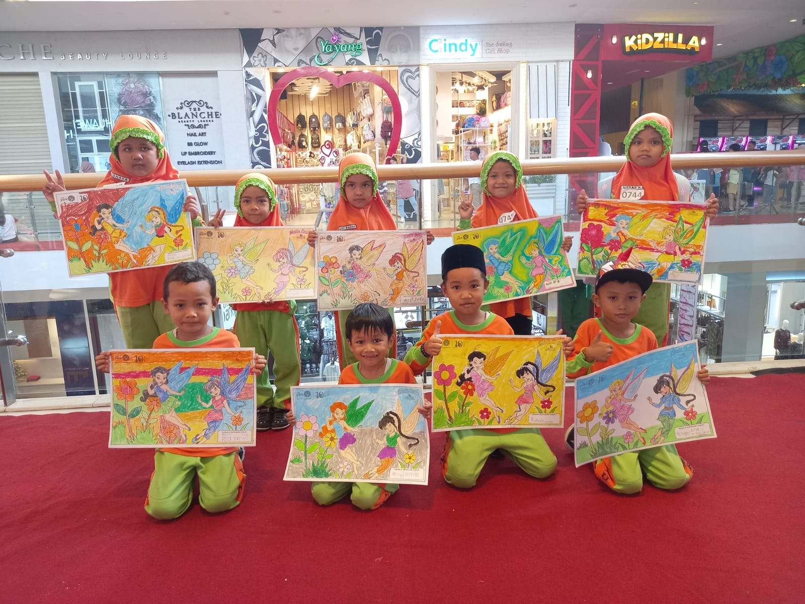

SELAMAT DATANG
Di Website TKIT Darul Falah Sukoharjo
Temukan program-program menarik, kegiatan seru, dan fasilitas terbaik untuk mendukung tumbuh kembang si kecil di sini. Mari bersama menciptakan pengalaman belajar yang penuh warna dan tak terlupakan!
SelengkapnyaVisi
Terwujudnya Generasi Islami Yang Sholeh, Cerdas, Kreatif dan berkarakter.
Misi
- Menanamkan Keimanan dan Ketaqwaan kepada Allah SWT.
- Membiasakan anak ber-Akhlaqul Karimah sejak dini.
- Menumbuh kembangkan kecerdasan dan kreatifitas anak.
- Membiasakan kedisiplinan dan kemandirian sejak dini.
- Menanamkan cinta tanah air.

Kurikulum dan Metode Pembelajaran
Modul Klasikal
Metode pembelajaran yang fokus pada interaksi kelas.
Modul Kelompok
Belajar dalam kelompok untuk meningkatkan kolaborasi.
Modul Sentra
Belajar melalui sentra-sentra kegiatan interaktif.
Foto Kegiatan

Foto Bersama

Wisuda TK

Latihan Praktek